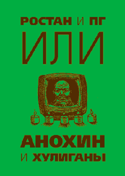

КНИГА
"РОСТАН И ПГ
ИЛИ
АНОХИН И ХУЛИГАНЫ"
Роман Степанович Анохин родился в 1909 г. в Москве. С 1931 по 1971 гг. работал на заводе "Знамя революции". В 1971 г. выходит на пенсию и переезжает в Обуховку (под Наро-Фоминском). 1973 г. Становится комендантом дачного поселка Обуховка. Проводит магистральный газ, линию уличного освещения, укрепляет заборы. 1976 г. Арест и исчезновение из следственного изолятора (19 марта).
Рисовать Роман Степанович Анохин начал на 61-м году жизни. В 1974 г. создает серию "Заборы", признанную одной из вершин творчества. Работы подписывает псевдонимом Ростан. Увлекшись звукозаписью, записывает около 42-х часов различных звуков. Ведет летопись дачного кооператива (книга сгорела в 1980 г.). 12 января 1976 г. Анохин арестован, в сарае обуховского коменданта милиция находит тела троих мальчиков, четырех девочек и двух собак. На следствии выясняется, что группа наро-фоминских школьников, приехав безобразничать в опустевшую на зиму Обуховку, ломала заборы и громила дома. Подростки забили двух анохинских дворняг и, окружив дом Романа Степановича, потребовали алкоголя, угрожая поджогом. В ответ Анохин открыл огонь из ружья. Только один из хулиганов ушел живым. В ночь накануне суда, 19 марта 1976 г., Роман Степанович Анохин таинственным образом исчез из следственного изолятора. Дети, убитые Анохиным, вернулись в семьи и учиться стали только на "хорошо" и "отлично". Уголовное дело прекращено. В Обуховке до сих пор с завидным постоянством появляются на свет щенки, совершенно идентичные погибшим псам Анохина.
СОДЕРЖАНИЕ КНИГИ:
РОСТАН: ЗАБОРЫ
РОСТАН: ДЕТИ АНОХИНА
Ранние работы Р.С. АНОХИНА
ПГ: ОТЕЦ ГЕРМОГЕН
ПГ:ДАЧНАЯ ЛЕТОПИСЬ
|